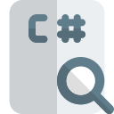

Francisco Terán
Estudiante de de ingenieria en sofware con conocimientos de lenguajes de programación como:
- C++
- Java

- javascript

- c# 
Experiencias
Acerca de mis experiencias. En la parte de
mi proceso de vinculación, tuve experiencia con Exelearning y latex, no es que
sea un lenguaje de programación lo que es Exelearning pero fue una buena práctica
para ir diseñando varias cosas , ya sea estilo o redacciones y más
importante entender lo que quiere el cliente. En cuestión de látex si me
desarrolle en lo que es ciertos Código que necesitaba, ya sea para la graficas
que se me solicitaban para el área de geometría en una plataforma para los
estudiantes de nivelación
En mi proceso en la universidad con la carrera , aprender diferentes lenguajes como python, c++,c#, java , javascript o inclusive trabaja en la parte de base de datos con gestores conocidos por decir postgresql,oracle y mysql. En ese proceso de la universidad eh ido aprendiendo que no solo hay que usar un lenguaje de programación ,si no , ir usando dependiendo de la necesidad que requiera un programa e ir entendiendo las diferentes sintaxis que existe en cada uno de ellos.
Mis experiencias en curso que eh tomado ya
sea en hacking ético, criptología y
seguridad de la información. En la parte de
hacking ético me llego a descubrir las vulnerabilidades y las técnicas que usa
como men in middle que es una técnica aplicada en el uso de redes wifi-libres,
una piña wifi que se utiliza como herramienta de suplantación de identidad en
redes WIFI
Habilidades
En mi estudios en el desarrollo de software eh aprendido a utilizar y a especializarme en:
-
java
- c#
- C++
- javascript
- html
- postgres
- mysql
- oracle
- css
- python
- Blender
Tambien en la especializarme o en el analisis de algortimos o tecnicas que se utilizan en las diferente áreas , como:
- Listas en c++ (simples, dobles ,circular )
- Grafos
- Hilos en computación paralela
- semáforos para el control de hilos
- Arboles en c++
- Clase abstractas, interfaces, modelo vista controlador en java
- Conocimiento de orientado objetos
- Análisis en problemas de base de datos para un correcta apliaciones , ya sea la normalizacion y los modelos conceptual, logicos y fisicos
juego de sudoku en c#
About Me

Tengo 22 años. Estudiante de la universidad de las Fuerzas Armadas ESPE cursando quinto semestre, vivo en Ecuador-Quito. Mis gustos de la programación es estructura de datos, computación paralela, web y computación grafica.
Contact
Para cualquier consulta, póngase en contacto con la siguiente información:
- Email: francisco_teran54@hotmail.com/franciscoxtz@gmail.com
- Phone: +583 98 768 6148
- Address: Santa Rita, Quito, Ecuador